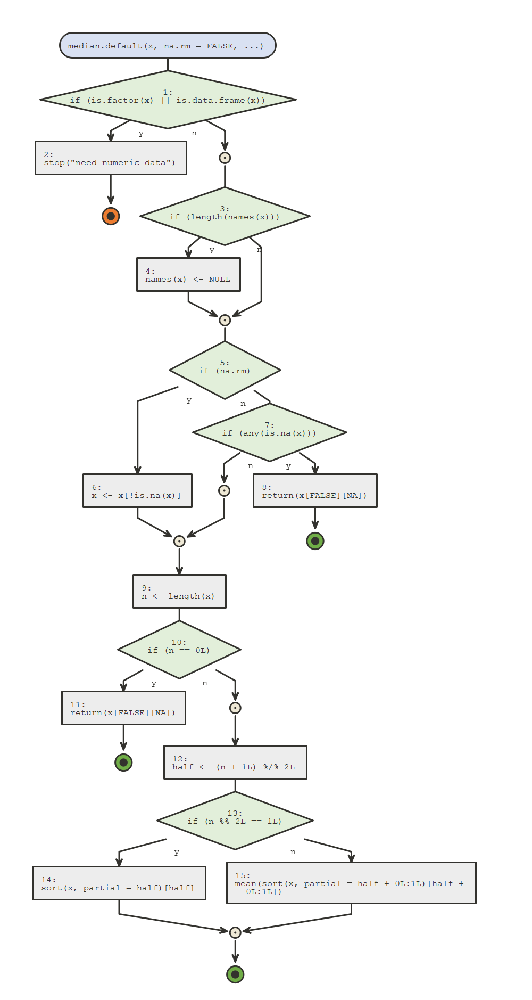

Visualize as flow diagrams the logic of functions, expressions or scripts and ease debugging.
Call
flow_view()on a function, a quoted expression, or the path of an R script to visualize it.Call
flow_run()on a call to a function to visualize which logical path in the code was taken. Setbrowse = TRUEto debug your function block by block (similar tobase::browser()) as the diagram updates.Export to html, png, jpeg, or pdf.
Use the Rstudio addins to run
flow_view()orflow_run()on your selection.
{flow} is built on top of Javier Luraschi’s {nomnoml} package, which provides an interface to nomnoml, a tool for drawing sassy UML diagrams based on syntax with customizable styling.
Example

There are way too many features to show them all on a README, check the vignette Draw a function for a deeper dive. More vignettes to come!
The following code gives you a taste of the possibilities.
# exports (supports png, jpeg, pdf, html) # shortcuts are available to export to temp file and open flow_view(median.default, out = "png") # visualize which path was taken (relevant S3 method is presented) vec <- c(1:3, NA) flow_run(median(vec, na.rm = TRUE)) # works when code fails too (handy to debug!) flow_run(median(iris)) # step by step exploration vec <- c(1:3, NA) flow_run(median(vec, na.rm = TRUE), browse = TRUE) # then call `d` to draw the diagram at the relevant step